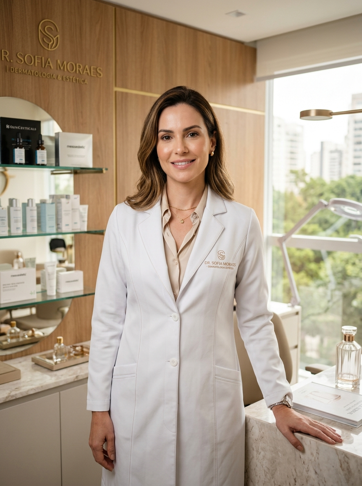
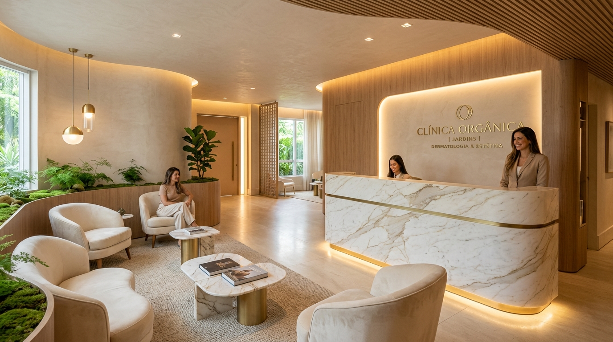

A ciência do rejuvenescimento com naturalidade absoluta.
Aos 35+, sua pele não precisa de exageros ou transformações artificiais. Precisa de diagnóstico médico individualizado, tecnologias padrão ouro e restauração sutil da sua melhor versão.

A verdade sobre a pele depois dos 35 anos
Envelhecer com elegância não significa paralisar seu rosto. Compreenda o que realmente acontece nas camadas profundas da derme e como a medicina atua para desacelerar o tempo.
Perda de 1% de Colágeno ao Ano
A partir dos 25 anos, a produção celular de colágeno e elastina cai progressivamente. A pele perde sustentação e densidade, resultando em linhas finas e textura opaca.
Solução: Bioestimuladores & UltraformerReabsorção Óssea & Coxins de Gordura
Com a maturidade, os compartimentos de gordura facial sofrem ptose e a estrutura óssea reduz levemente, causando a perda do contorno mandibular e o aspecto de "rosto derretido".
Solução: Preenchimento Estrutural MD CodesFotoenvelhecimento & Melasma
A exposição solar acumulada e alterações hormonais geram manchas profundas, poros dilatados e perda do viço natural da pele, exigindo lasers de precisão médica.
Solução: Laser Lavieen & Peelings MédicosProtocolos Exclusivos & Tecnologia Padrão Ouro
Cada tratamento é rigorosamente planejado de acordo com a anatomia e os objetivos individuais do paciente, garantindo segurança e discrição total.
Toxina Botulínica Preventiva & Corretiva
Suaviza rugas na testa, glabela e pés de galinha sem congelar a sua expressão. Doses calculadas minuciosamente para manter sua vivacidade e naturalidade.
- Previne vincos profundos e rugas estáticas
- Elevação sutil da cauda das sobrancelhas
- Procedimento rápido com retorno imediato à rotina
Preenchimento com Ácido Hialurônico
Técnica estrutural para lábios elegantes, olheiras profundas, contorno mandibular e maçãs do rosto, respeitando milimetricamente a simetria facial.
- Redefinição do arco mandibular e mento
- Hidratação e volumização labial sutil
- Produtos importados certificados pela ANVISA/FDA
Rinomodelação Estruturada
Correção não cirúrgica de pequenas assimetrias, ponta caída e dorso nasal com ácido hialurônico de alta densidade e segurança vascular.
- Elevação da ponta nasal sem cortes
- Camuflagem da giba óssea
- Efeito imediato e pós-procedimento tranquilo
Radiesse® & Radiesse Plus®
Promove estímulo biológico potente na matriz dérmica, aumentando a espessura da pele e proporcionando efeito lifting progressivo e sustentável.
- Recuperação da firmeza no terço inferior
- Tratamento eficaz de flacidez no pescoço e mãos
- Duração de até 18 a 24 meses
Sculptra® Facial & Corporal
Estimula a síntese de colágeno tipo 1 em mais de 66%, restaurando o volume natural e a densidade tecidual perdida com o tempo.
- Melhora significativa da elasticidade dérmica
- Rejuvenescimento global e não volumizador
- Resultados naturais e progressivos
HArmonyCa® Dual Effect
A união sinérgica do Ácido Hialurônico para lifting imediato com a Hidroxiapatita de Cálcio para estímulo prolongado de colágeno.
- Efeito tensor imediato com bioestímulo contínuo
- Definição do contorno lateral da face
- Tecnologia médica de ponta
Ultraformer MPT
A tecnologia mais avançada do mundo para lifting não cirúrgico, atuando na fáscia muscular (SMAS), ancorando os tecidos e reduzindo a papada.
- Compactação de gordura e firmeza na papada
- Efeito Fox Eyes e elevação do terço médio
- Tratamento sem downtime (sem tempo de repouso)
Laser Lavieen (Efeito BB Glow)
Padrão ouro para uniformização do tom da pele, clareamento de melasma, fechamento de poros dilatados e viço de pele de porcelana.
- Clareamento de manchas e melasma resistente
- Textura refinada e luminosidade instantânea
- Seguro para todos os fototipos de pele
Laser de CO₂ Fracionado
Renovação celular intensa para cicatrizes de acne, rugas profundas ao redor dos olhos e boca, e flacidez de pálpebras.
- Blefaroplastia sem corte nas pálpebras
- Estímulo profundo de neocolagênese
- Transformação da textura cutânea
MMP® Capilar com Drug Delivery
Aplicação direta de ativos estéreis, fatores de crescimento e bloqueadores hormonais no folículo piloso para interromper a queda e encorpar os fios.
- Tratamento de alopecia androgenética (calvície)
- Controle de eflúvio telógeno pós-estresse
- Aumento da densidade e calibre dos fios
Tricoscopia Digital com Dermatoscópio
Exame microscópico avançado do couro cabeludo que quantifica fios anágenos, diâmetro folicular e sinais inflamatórios antes de iniciar qualquer protocolo.
- Diagnóstico preciso da causa da queda
- Mapeamento fotográfico evolutivo
- Planejamento terapêutico individual
LEDterapia & Laser de Baixa Potência
Estimula o metabolismo celular folicular por meio de luz vermelha e infravermelha, aumentando a vascularização e acelerando a fase de crescimento capilar.
- Acelera o crescimento e reduz a inflamação
- Tratamento 100% indolor e relaxante
- Potencializa protocolos de consultório
Evolução Clínica & Antes / Depois
Arraste a linha divisória interativa para visualizar a restauração sutil da densidade da derme, luminosidade e firmeza facial sem perder a identidade.

Descubra o protocolo ideal para o seu momento
Responda 3 perguntas rápidas e receba uma triagem inicial médica pré-formatada diretamente no WhatsApp da nossa equipe de concierge.
Qual é a sua principal queixa ou prioridade hoje?
Selecione a opção que mais se alinha com o seu desejo de autocuidado:
Sua faixa etária e experiência prévia
A idade e o histórico determinam a densidade dos protocolos:
Onde devemos enviar o seu planejamento?
Nossa concierge médica entrará em contato com a pré-avaliação e disponibilidade de agenda:
Dra. Sofia Moraes
CRM 158.940 • RQE 72.115 | Especialista em Dermatologia & Estética Médica
Graduada pela Escola Paulista de Medicina (UNIFESP) e com fellowship internacional em injetáveis avançados e lasers de alta densidade, a Dra. Sofia Moraes construiu sua reputação com base em um princípio inegociável: a harmonia natural que preserva a identidade de cada paciente.
- Membro Titular da SBD — Sociedade Brasileira de Dermatologia.
- Membro da SBCD — Sociedade Brasileira de Cirurgia Dermatológica.
- Corpo Clínico dos Principais Hospitais de São Paulo, atuando com protocolos de biossegurança de nível hospitalar.
- Mais de 9.000 tratamentos estéticos realizados com zero intercorrências graves.

Um espaço pensado para o seu absoluto conforto & discrição
Atendimento 100% Privativo
Salas com isolamento acústico e horários espaçados para garantir sua total privacidade.
Biossegurança Nível Hospitalar
Ambiente esterilizado, insumos descartáveis e medicamentos selados abertos na sua presença.
Serviço de Concierge & Manobrista
Lounge climatizado, café barista exclusivo e estacionamento com manobrista no local.
O que dizem as nossas pacientes
A verdadeira satisfação reside em olhar no espelho e reconhecer a sua própria beleza, descansada e radiante.
"Eu tinha muito receio de fazer procedimentos e ficar com o rosto artificial ou exagerado. A Dra. Sofia me explicou cada detalhe na consulta e aplicamos o Radiesse e Toxina Botulínica. O resultado foi incrivelmente sutil: todos dizem que rejuvenesci 8 anos, mas ninguém diz que fiz nada!"
Camila Lourenço
Executiva de Mercado • Jardins, SP"Fiz o Ultraformer MPT com a Dra. Sofia para tratar a papada e a flacidez do contorno do rosto. O efeito lifting foi nítido logo nas primeiras semanas e o ambiente da clínica é impecável, com um atendimento que faz a gente se sentir em um verdadeiro spa médico."
Mariana Santoro
Arquiteta • Itaim Bibi, SP"Sofri com melasma resistente durante anos, gastando fortunas com cremes que não funcionavam. O protocolo de Laser Lavieen combinado com a rotina dermatológica da Dra. Sofia limpou minha pele completamente. Minha autoestima foi restaurada!"
Beatriz Arruda
Empresária • Higienópolis, SPPerguntas Frequentes
Transparência e segurança científica são pilares fundamentais da nossa conduta médica.
A naturalidade depende de dois fatores: diagnóstico minucioso da anatomia facial e respeito às proporções individuais. A Dra. Sofia adota uma filosofia de dosagens progressivas e precisas ("menos é mais"), valorizando seus traços originais sem qualquer estigma de artificialidade.
Utilizamos anestésicos tópicos de formulação médica exclusiva e resfriadores dérmicos de alta performance para garantir o máximo conforto. Procedimentos como Toxina Botulínica, Bioestimuladores e Ultraformer MPT não exigem repouso (zero downtime), permitindo que você retorne às suas atividades no mesmo dia.
O Preenchimento (Ácido Hialurônico) tem como foco repor volumes perdidos (como lábios, olheiras e queixo) com resultado imediato. Já os Bioestimuladores (como Radiesse e Sculptra) estimulam as suas próprias células a produzirem colágeno novo ao longo de semanas, promovendo firmeza e efeito lifting sem aumentar o volume do rosto.
A durabilidade varia conforme o protocolo: a Toxina Botulínica tem durabilidade média de 4 a 6 meses; o Ácido Hialurônico de 12 a 18 meses; e os Bioestimuladores de Colágeno geram uma renovação tecidual que perdura por até 2 anos.
A primeira consulta tem duração aproximada de 60 minutos. É realizada uma avaliação facial e dérmica completa, análise da mimica e estilo de vida, mapeamento fotográfico e a elaboração de um Plano de Tratamento Anual exclusivo para você.
Venha nos Visitar
Localizada no ponto mais nobre dos Jardins, nossa clínica oferece fácil acesso, segurança privada e estacionamento com manobrista.